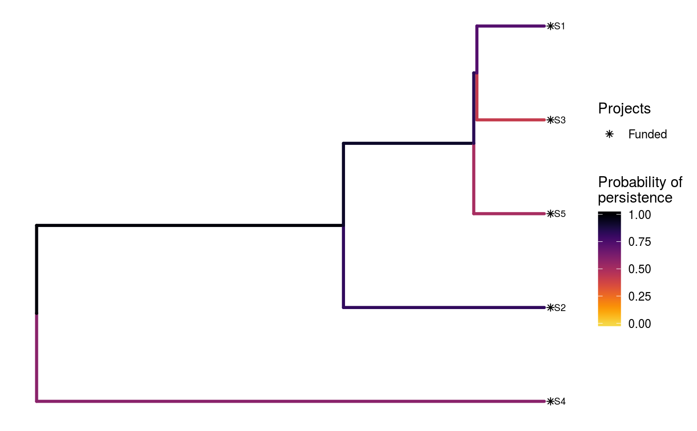
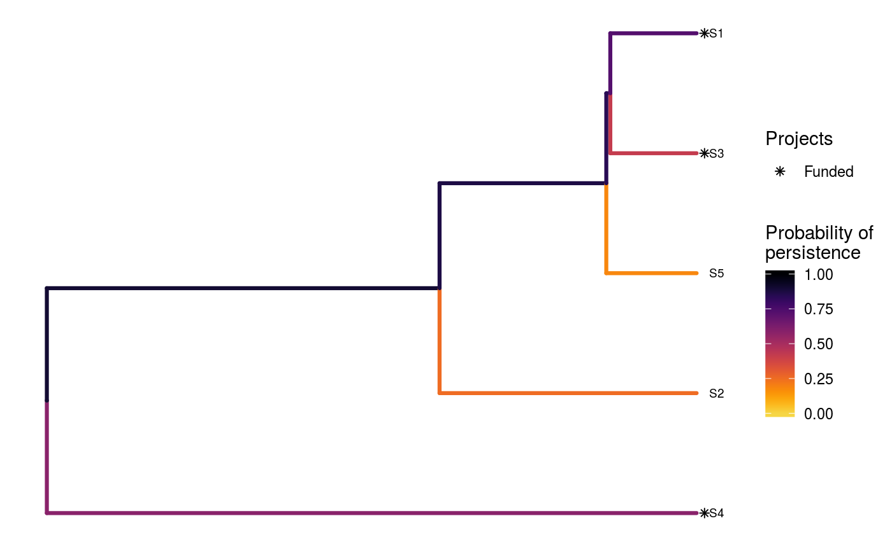
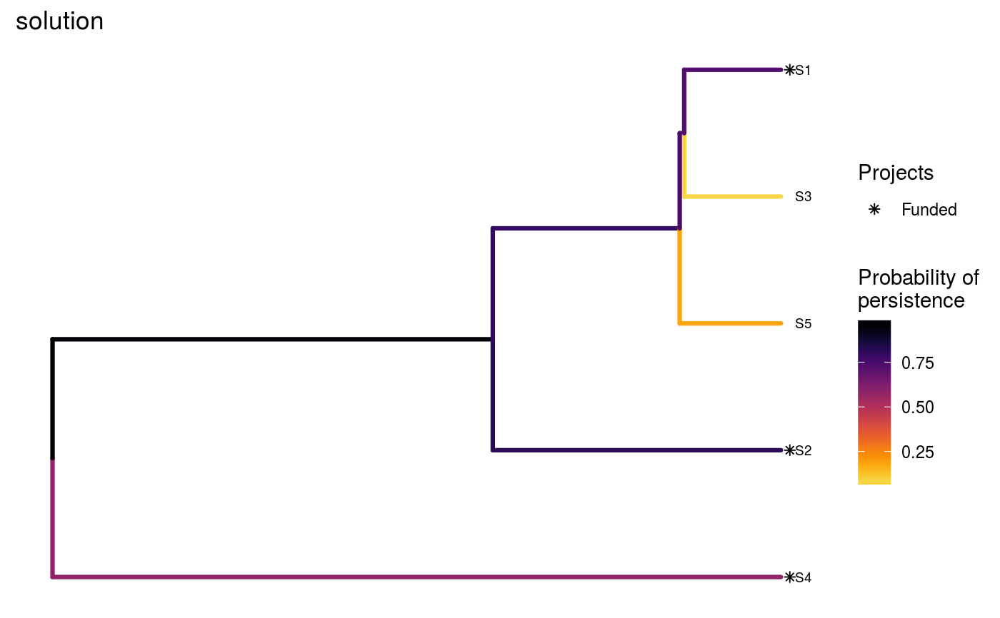
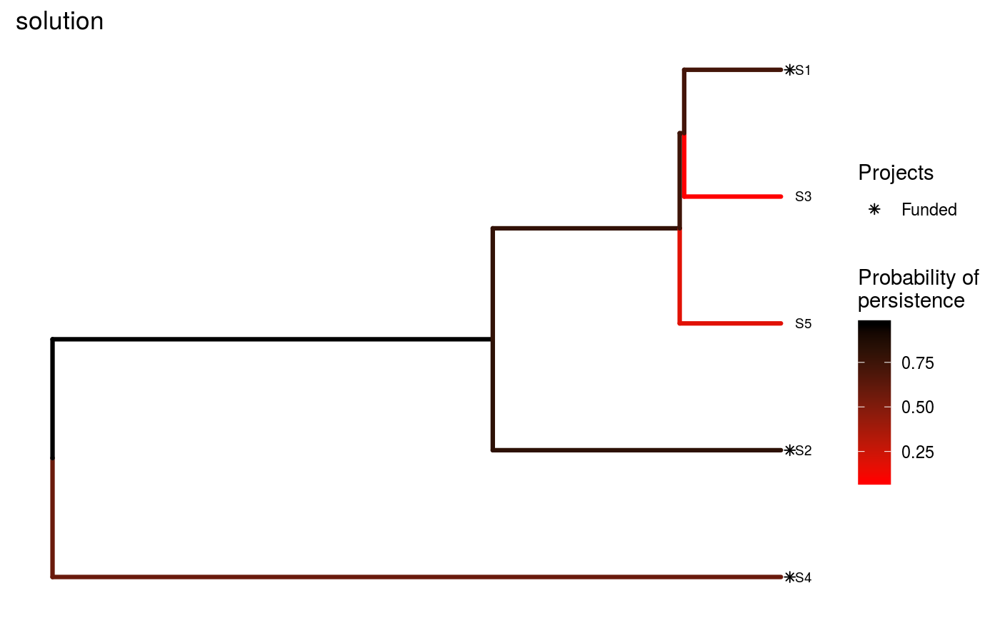
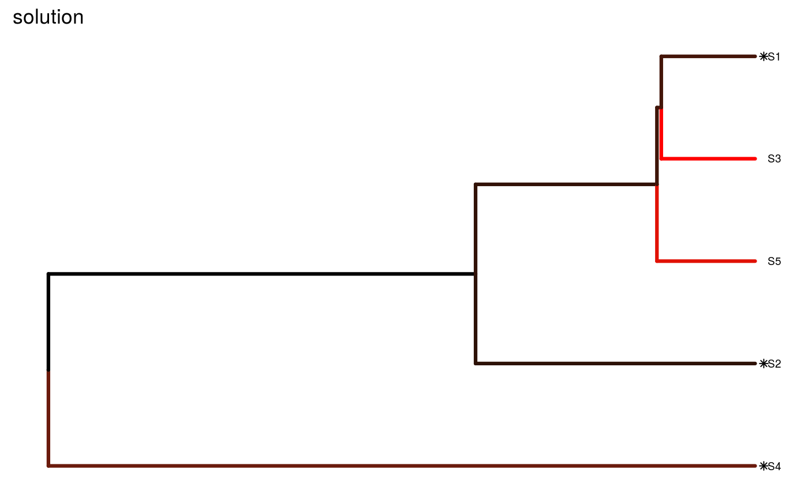

Plot a 'Project Prioritization Protocol' solution with phylogenetic data
Source:R/ppp_plot_phylo_solution.R
ppp_plot_phylo_solution.RdCreate a plot displaying a phylogenetic tree (phylogram) to visualize a solution to the 'Project Prioritization Protocol' problem (Joseph, Maloney & Possingham 2009) with phlyogenetic data.
ppp_plot_phylo_solution(x, y, tree, solution, project_column_name, success_column_name, action_column_name, cost_column_name, n = 1L, symbol_hjust = 0.007)
Arguments
| x |
|
|---|---|
| y |
|
| tree |
|
| solution |
|
| project_column_name |
|
| success_column_name |
|
| action_column_name |
|
| cost_column_name |
|
| n |
|
| symbol_hjust |
|
Details
This function requires the ggtree (Yu et al. 2017).
Since this package is distributed exclusively
through Bioconductor, and is not
available on the
Comprehensive R Archive Network,
please execute the following command to install it:
source("https://bioconductor.org/biocLite.R");biocLite("ggtree").
If the installation process fails, please consult the package's online documentation.
Here, each phylogenetic branch is colored according to probability that it is expected to persist into the future (based on Faith 2008). Additionally, species that directly benefit from at least a single completely funded project with a non-zero cost are denoted with an asterisk symbol. Species that indirectly benefit from funded projects---because they are associated with partially funded projects that have non-zero costs and share actions with at least one funded project---are denoted with an open circle symbols.
References
Faith DP (2008) Threatened species and the potential loss of phylogenetic diversity: conservation scenarios based on estimated extinction probabilities and phylogenetic risk analysis. Conservation Biology, 22: 1461--1470.
Joseph LN, Maloney RF & Possingham HP (2009) Optimal allocation of resources among threatened species: A project prioritization protocol. Conservation Biology, 23, 328--338.
Yu G, Smith DK, Zhu H, Guan Y, & Lam TTY (2017) ggtree: an R package for visualization and annotation of phylogenetic trees with their covariates and other associated data. Methods in Ecology and Evolution, 8: 28--36.
See also
To generate solutions for the 'Project
Prioritization Protocol' problem, see
ppp_heuristic_phylo_solution
ppp_exact_phylo_solution,
ppp_manual_phylo_solution,
or ppp_random_phylo_solution.
Examples
# set seed for reproducibility set.seed(500) # load built-in data data(sim_project_data, sim_action_data, sim_tree) # print simulated project data print(sim_project_data)#> # A tibble: 6 x 13 #> name success S1 S2 S3 S4 S5 S1_action S2_action S3_action #> <chr> <dbl> <dbl> <dbl> <dbl> <dbl> <dbl> <lgl> <lgl> <lgl> #> 1 S1_p~ 0.919 0.791 0 0 0 0 TRUE FALSE FALSE #> 2 S2_p~ 0.923 0 0.888 0 0 0 FALSE TRUE FALSE #> 3 S3_p~ 0.829 0 0 0.502 0 0 FALSE FALSE TRUE #> 4 S4_p~ 0.848 0 0 0 0.690 0 FALSE FALSE FALSE #> 5 S5_p~ 0.814 0 0 0 0 0.617 FALSE FALSE FALSE #> 6 base~ 1 0.298 0.250 0.0865 0.249 0.182 FALSE FALSE FALSE #> # ... with 3 more variables: S4_action <lgl>, S5_action <lgl>, #> # baseline_action <lgl>#> # A tibble: 6 x 4 #> name cost locked_in locked_out #> <chr> <dbl> <lgl> <lgl> #> 1 S1_action 94.4 FALSE FALSE #> 2 S2_action 101. FALSE FALSE #> 3 S3_action 103. TRUE FALSE #> 4 S4_action 99.2 FALSE FALSE #> 5 S5_action 99.9 FALSE TRUE #> 6 baseline_action 0 FALSE FALSE#> #> Phylogenetic tree with 5 tips and 4 internal nodes. #> #> Tip labels: #> [1] "S3" "S1" "S5" "S2" "S4" #> #> Rooted; includes branch lengths.# create random some solutions with a budget of 700 s1 <- ppp_random_phylo_solution(sim_project_data, sim_action_data, sim_tree, 700, "name", "success", "name", "cost", number_solutions = 10) # print output print(s1)#> # A tibble: 10 x 12 #> solution method obj budget cost optimal S1_action S2_action S3_action #> <int> <chr> <dbl> <dbl> <dbl> <lgl> <lgl> <lgl> <lgl> #> 1 1 random 3.13 700 498. NA TRUE TRUE TRUE #> 2 2 random 3.13 700 498. NA TRUE TRUE TRUE #> 3 3 random 3.13 700 498. NA TRUE TRUE TRUE #> 4 4 random 3.13 700 498. NA TRUE TRUE TRUE #> 5 5 random 3.13 700 498. NA TRUE TRUE TRUE #> 6 6 random 3.13 700 498. NA TRUE TRUE TRUE #> 7 7 random 3.13 700 498. NA TRUE TRUE TRUE #> 8 8 random 3.13 700 498. NA TRUE TRUE TRUE #> 9 9 random 3.13 700 498. NA TRUE TRUE TRUE #> 10 10 random 3.13 700 498. NA TRUE TRUE TRUE #> # ... with 3 more variables: S4_action <lgl>, S5_action <lgl>, #> # baseline_action <lgl># plot the first solution ppp_plot_phylo_solution(sim_project_data, sim_action_data, sim_tree, s1, "name", "success", "name", "cost")# plot the second solution ppp_plot_phylo_solution(sim_project_data, sim_action_data, sim_tree, s1, "name", "success", "name", "cost", n = 2)# since this function returns a ggplot2 plot object, we can customize the # appearance of the plot using standard ggplot2 commands! # for example, we can add a title ppp_plot_phylo_solution(sim_project_data, sim_action_data, sim_tree, s1, "name", "success", "name", "cost") + ggtitle("solution")# we could also also set the minimum and maximum values in the color ramp to # correspond to those in the data, rather than being capped at 0 and 1 ppp_plot_phylo_solution(sim_project_data, sim_action_data, sim_tree, s1, "name", "success", "name", "cost") + scale_color_gradientn(name = "Probability of\npersistence", colors = viridisLite::inferno(150, begin = 0, end = 0.9, direction = -1)) + ggtitle("solution")#> #># we could also change the color ramp ppp_plot_phylo_solution(sim_project_data, sim_action_data, sim_tree, s1, "name", "success", "name", "cost") + scale_color_gradient(name = "Probability of\npersistence", low = "red", high = "black") + ggtitle("solution")#> #># we could even hide the legend if desired ppp_plot_phylo_solution(sim_project_data, sim_action_data, sim_tree, s1, "name", "success", "name", "cost") + scale_color_gradient(name = "Probability of\npersistence", low = "red", high = "black") + theme(legend.position = "hide") + ggtitle("solution")#> #>